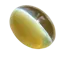
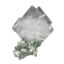

Correspondence Grimoire
Eyes

Cat's Eye QuartzCavansiteCelestiteChalcedony
Clear FluoriteThe symbolism of the eye appears in so many places and forms that its very pervasiveness evokes the All Seeing Eye itself. The eye is closely tied to the ideas of light and spirit, and is often called the "mirror of the soul." When a person dies, one of the first acts is to close the eyes, a timeless gesture marking the departure of the essence of life. The right eye is generally held to be the eye of the Sun, and the left the eye of the Moon.
The eye also represents the "god within," as in the third eye, marked by the small dot, the bindhu, set above and between the eyes. The Buddha is always shown with this third eye. Here the eye signifies the higher self, the part of consciousness that is free of ego and able to guide and direct. While the outward eyes are organs of vision, this "eye of wisdom" looks inward as the "eye of dharma" or the "eye of the heart."
As an occult symbol, the unlidded eye began as the emblem of the Egyptian Goddess of Truth, Ma'at, whose name was synonymous with the verb "to see," so that truth and vision were closely aligned. The same symbol appears as the Eye of Horus, or Udjat, a stylized eye with a brow above and a curlique beneath, representing the all-seeing vision of the Sun God Horus. A prominent symbol in the Western magickal tradition, it stands among other things for secret or occult wisdom, and was painted on the sides of Egyptian funerary caskets so that the dead might see their way through the journey to the Afterlife. In Celtic magickal lore the eye was likewise equated with the Sun, the planet and the eye sharing the same name, Sul.
The All Seeing Eye, set within a triangle with rays emanating from the lower lid, appears not only in Freemasonry, where it stands for the Great Architect of the Universe and for both outward vision and inner spiritual watchfulness, but in Christian symbolism too.
The eye is also used as a charm, painted on the sides of humble fishing boats to protect them from the Evil Eye and to grant the boat a power of sight of its own, the same reasoning that lay behind the Egyptian practice of painting eyes on coffins. Belief in the evil eye is ancient, mentioned in Babylonian texts from three thousand years before the common era. It is the idea that some people can curse an object or a person simply by looking, as though the eye itself could project a malevolent thought. The sheer number of charms made to ward it off is a measure of how deeply the belief was held.
The Body's Magickal Weak Point
The eyes are seen as the body's magickal Achilles heel, an opening through which evil can slip in, and so they need magickal protection. As the windows of the soul they are an anatomical threshold. They channel power, yet they also leave a person psychically exposed, and they are the route by which the Evil Eye does its work. This sense of vulnerability is what first inspired eye makeup, which was designed as much for magickal protection as for beauty. See Kohl.